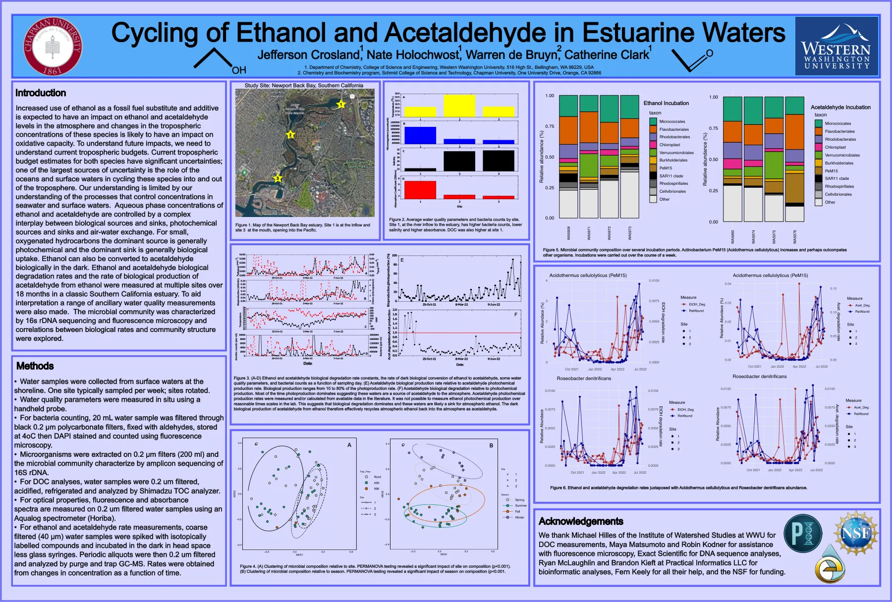

Lab Shadowing
I shadowed research at the University of Washington, learning about cell culture and laboratory maintenance. I also toured laboratories at Immunome, a biotechnology and drug development company in Bothell, Washington.
Coach Nate · Research
I studied ethanol and acetaldehyde cycling in estuarine water at Western Washington University and later coauthored a paper on Medicaid contraceptive-care claims for youth in foster care with the University of Washington School of Social Work.
Environmental chemistry · Undergraduate research · ACS 2023
Background and scientific question
The use of ethanol as a fuel and fuel additive may affect atmospheric concentrations of ethanol and acetaldehyde, which in turn influence tropospheric oxidative capacity. One uncertainty in estimating their atmospheric budgets is how surface waters contribute to their cycling through biological and photochemical reactions and air–water exchange.
Our major research question was whether bacteria and dissolved organic matter influence the production and degradation of ethanol and acetaldehyde in estuarine waters. We studied Newport Back Bay in Southern California, measuring biological transformation rates, water chemistry and microbial communities over approximately 18 months.
I worked with three lab partners to investigate whether fluorescence and absorbance could be used as indicators of bacterial activity and dissolved organic matter. Reaction rates were measured separately.
Poster authors: Jefferson Crosland, Nate Holochwost, Warren de Bruyn, and Catherine Clark. Institutions: Western Washington University and Chapman University. The poster acknowledges National Science Foundation funding for the work.
My role in the laboratory
I completed more than 300 hours of bench research in Dr. Catherine Clark’s environmental chemistry laboratory at Western Washington University from 2021 to 2023. I worked on several projects in which I tested and organized water samples collected across varying conditions, including season, post-wildfire status and estuary site location.
I prepared laboratory solutions, including DAPI stain and PBS buffer, and quantified bacterial abundance using fluorescence microscopy. To protect freshly stained samples from light, I lined a shipping box with dark matte foil to make a DAPI darkness chamber. I also made a standing desk and sample organizer from the remaining materials. I derived a pixel-based conversion factor relating bacterial counts to microscope scale-bar area and developed an original image-analysis pipeline that established our lab’s protocol for quantifying bacterial abundance.
I contributed new skills and standard operating procedures to our lab, characterized dissolved organic matter using absorbance and fluorescence measurements, analyzed data and developed figures using Excel and OriginPro. This required me to independently learn redundancy analysis (RDA).
In March 2023, I co-presented the team’s poster at the American Chemical Society national meeting in Indianapolis.
Experimental approach
We examined shoreline surface-water samples across the estuary, from the river inflow toward the mouth that opens to the Pacific. The poster documents in-situ water-quality measurements, DAPI fluorescence microscopy for bacterial counts, 16S rDNA amplicon sequencing to characterize microbial communities, and dissolved organic carbon, absorbance and fluorescence analyses on filtered samples.
For the reaction-rate experiments, the team added isotopically labeled ethanol or acetaldehyde to coarse-filtered water samples, incubated them in the dark, and used purge-and-trap gas chromatography–mass spectrometry (GC-MS) to track changes in concentration over time. My related work with fluorescence data included the fluorescence index, biological index and humification index.
Results and interpretation
Near the estuary's river inflow, the team observed higher bacterial counts, dissolved organic carbon and absorbance, alongside lower salinity than at sites farther toward the ocean. Microbial community composition also differed by sampling site and season; the poster reports PERMANOVA p < 0.001 for both comparisons.
Biological acetaldehyde production ranged from 10–80% of the photochemical production rate in the poster’s comparisons. Photochemical acetaldehyde production rates were measured or calculated from published data. Photochemical production generally dominated, which the team interpreted as suggesting that these waters could be a source of acetaldehyde to the atmosphere. Ethanol photochemical production could not be measured on a practical laboratory timescale; the poster interprets the available evidence as suggesting predominantly biological ethanol loss and a likely sink for atmospheric ethanol. The biological conversion of ethanol into acetaldehyde in darkness may link these two cycles.
The measured rates and microbial associations are specific to these estuarine samples; the community data alone cannot identify the organisms responsible for particular reactions.
Why this project mattered to me
Through this experience, I learned how much I enjoy applying mathematics to biology through quantitative image analysis, the immersive nature of wet lab research, and the joy of attending conferences to further my learning and meet like-minded people.
I also received an award for academic excellence in chemistry during my undergraduate studies.
American Chemical Society · March 2023


Social work · Health policy · Peer-reviewed research
Published study · 2024
Day, A. G., Paul, R., Holochwost, N. G., & Benjamin, S. N. (2024). Claims for Contraceptive Care Among Female Youth Living in Foster Care by Type of Medicaid Insurance: An Analysis of Michigan’s Medicaid Claims Data. Child and Adolescent Social Work Journal.
The published paper acknowledges funding from the Blue Cross Blue Shield Association of Michigan and the NIH-supported Itzá/IHART3 research training program.
We examined whether Michigan’s transition from fee-for-service (FFS) Medicaid to a health maintenance organization (HMO) model was associated with changes in the types of contraceptives prescribed to youth in foster care and the timeliness of refills. Frequent placement changes can make monthly prescription refills difficult.
The team used linked, nonidentifiable Michigan child-welfare administrative records and Medicaid claims from 2009–2012. The final analytic sample contained 1,641 female youth aged 10–20 who had used contraceptives during the study period and met the data-completeness criteria. The study compared an FFS-only period (2009–2010), the transition to managed care (2010–2011), and an HMO-only period (2011–2012).
The primary outcome was whether a Medicaid claim for a contraceptive refill occurred before the previous supply was exhausted. Because the same young person could have multiple claims, the team used a longitudinal mixed-effects logistic regression model. The analysis accounted for age, race, geographic location, placement type and number of living arrangements.
This observational study cannot establish that the insurance transition alone caused the differences in refill timing.
Findings in the published paper
Of the contraceptive prescriptions represented in the study's summary, 77.26% were oral tablets, 19.84% injections, 1.76% patches and 1.14% vaginal contraceptives. Oral methods typically require more frequent pharmacy access than injections or long-acting options.
In the FFS period, 48.92% of recorded refill claims occurred before the previous supply was exhausted. In the HMO period, that figure was 46.23%. In the adjusted model, the HMO period had lower odds of a claim being made before exhaustion than the FFS period (adjusted odds ratio 0.85; 95% confidence interval 0.78–0.93); the transition-period adjusted odds ratio was 0.90 (95% CI 0.82–0.99).
Relative to youth living in residential facilities or group homes, timely refill-claim odds were lower for those in family-based settings (adjusted OR 0.63) and independent living (adjusted OR 0.55). Youth in Wayne County had lower adjusted odds than those in other Michigan counties (adjusted OR 0.81). Table 2 reports a mean of 2.53 living arrangements (SD 1.01) during the observation period.
My contribution
From 2023 to 2024, I completed more than 50 hours of research under Dr. Angelique Day at the University of Washington School of Social Work. I conducted literature reviews on contraceptive types, effectiveness, prescription frequency and use, and assisted in table development, manuscript writing and revision leading to journal acceptance. I was particularly interested in methods that require fewer repeat visits for youth experiencing frequent placement changes.
Interpretation and limitations
The claims data cannot establish actual contraceptive use, capture care obtained outside Medicaid or explain missed refills. The sample and historical Michigan insurance policies limit generalizability.
The paper reports that Michigan Medicaid did not reimburse long-acting reversible contraceptives during the study period and began reimbursement in 2018. This may help explain why these methods were rarely represented in the claims.
Why the research matters
The paper recommends access to a full range of contraceptive options, informed and noncoercive counseling, and support for youth navigating healthcare during placement changes. It also discusses the roles of child-welfare agencies and Medicaid plans in improving continuity of care.
This experience revealed the differences in the research process when comparing the hard sciences and the social sciences, a valuable insight when considering translational research and influencing policy.
Lab shadowing · University of Washington
I shadowed research at the University of Washington, learning about cell culture and laboratory maintenance. I also toured laboratories at Immunome, a biotechnology and drug development company in Bothell, Washington.
Community science · Volunteering
SoundBio Lab is a community biology makerspace in Seattle where I volunteered.
I helped develop biotechnology curriculum for students in the community.

My clinical and coaching experiences inform my scientific priorities. Working as a nursing assistant, clinical aide and strength coach has strengthened my interest in cartilage regeneration and preserving mobility throughout the human lifespan.
My area of interest is human cartilage regeneration, particularly the in vivo repair of the hips, knees and spine. I aim to contribute to the development of accessible, minimally invasive stem cell and tissue engineering-based therapies for degenerative articular cartilage and intervertebral discs.
I am interested in calcification and chondrocyte regulation over the lifespan, gene regulation, cell signaling and tissue regeneration, particularly in chondrocytes and mesenchymal stem cells. I am especially interested in the roles of SOX9, RUNX2, NOTCH and Wnt in regeneration and disease, as well as molecular barcoding, cell engineering and visualizing chondrocyte responses to mechanical loading or injury.
I am interested in optimizing strength development in adults, including how training volume, intensity, specificity, progression and recovery influence strength gains and long-term function.
I am also interested in strength development and muscle hypertrophy in individuals with generalized joint hypermobility, hypermobility spectrum disorders or hypermobile Ehlers–Danlos syndrome (hEDS), accounting for joint stability, symptoms and individual differences.